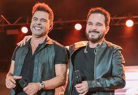

Zezé Di Camargo & Luciano formam uma das duplas sertanejas mais icônicas do Brasil, conquistando o público desde os anos 90. O sucesso começou em 1991, com a música "É o Amor", composta por Zezé e gravada pela dupla, tornando-se um verdadeiro hino do sertanejo romântico.
Ao longo da carreira, lançaram dezenas de álbuns e emplacaram hits como "No Dia em Que Saí de Casa", "Pão de Mel" e "Dois Corações e Uma História". A trajetória da dupla foi eternizada no filme "2 Filhos de Francisco" (2005), que se tornou um dos maiores sucessos do cinema brasileiro, contando a emocionante história de superação da família Camargo.
Com mais de 40 milhões de discos vendidos, diversos prêmios e turnês internacionais, Zezé Di Camargo & Luciano continuam sendo uma referência no gênero, levando emoção e romantismo aos fãs.
